Про кухню Таїланду
Тайська кухня відома своїми поєднаннями кислих, солодких, солоних та гострих смаків. Вона часто використовує свіжі трави та спеції, як-от лимонна трава, галангал та лайм. Типові страви включають том-ям (гострий кислий суп), пад-тай (смажена локшина), каррі та страви на основі кокосового молока. Тайська кухня також славиться своєю вуличною їжею, такою як смажений рис з ананасом або манго зі солодким липким рисом.
Виберіть країну
↑ Вгору
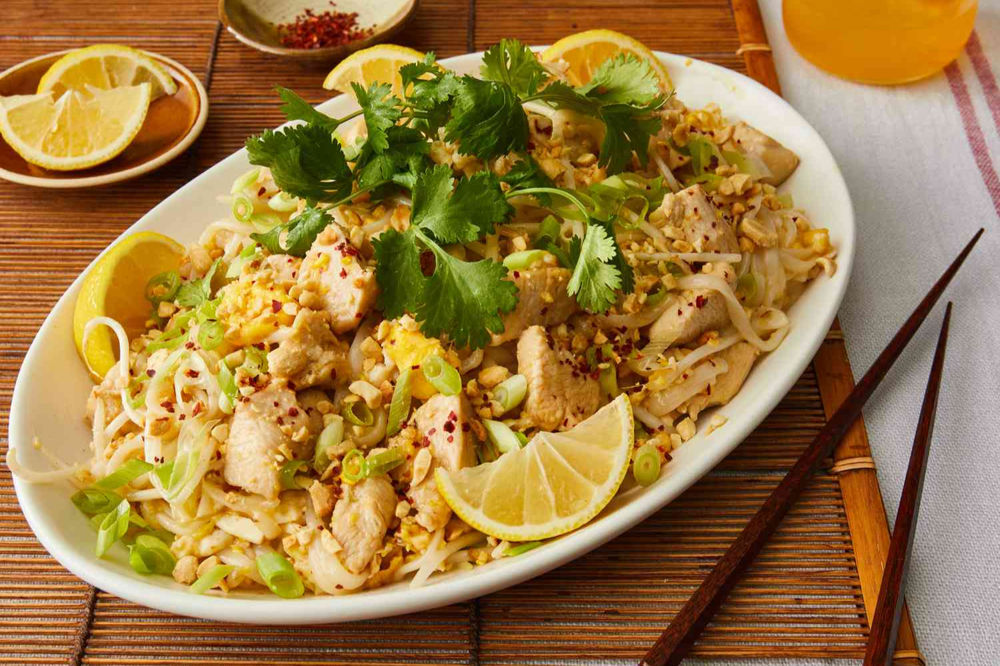
Пад тайПопулярна тайська страва з рисової локшини, смаженої з яйцем, тофу, креветками або куркою, приправленої соєвим соусом, рибним соусом, чилі та лаймом. Подається з подрібненими арахісами, свіжою кінзою та лимоном для додаткового смаку.
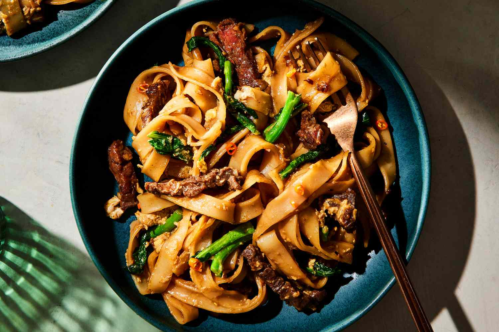
Пад сі-юТайська страва з широкої рисової локшини, смаженої в темному соєвому соусі разом із яйцем, овочами, такими як капуста чи броколі, і м'ясом або морепродуктами. Вона має насичений солодко-солоний смак і зазвичай подається гарячою.
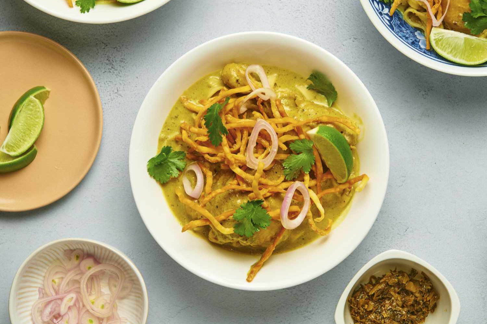
Као сойТрадиційна тайська страва з півночі країни, яка являє собою насичений каррі-суп із кокосовим молоком, широкою яєчною локшиною, куркою або яловичиною. Подається з хрусткою смаженою локшиною, лаймом, маринованими овочами та чилі-олійкою для балансу смаків.
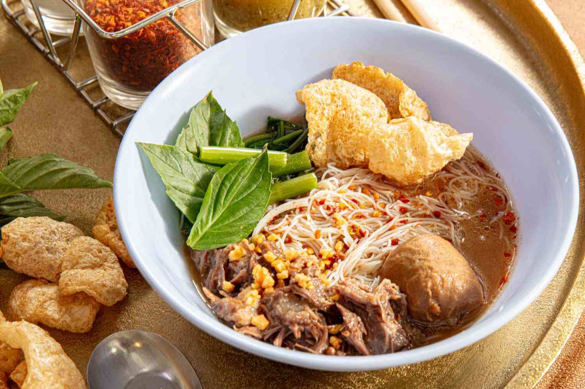
Гуай т'ю руа"Локшина з човна". Ароматний суп з рисовою локшиною, яловичиною або свининою, кров’ю тварин для густоти бульйону, часником і травами. Подається в маленьких порціях, що нагадують традицію подачі цієї страви на човнах.
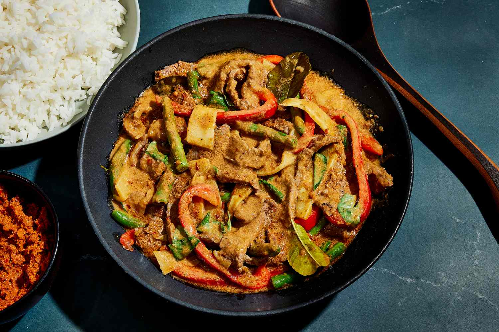
Пананг каріГусте тайське карі з ніжним м’ясом (часто курятиною або яловичиною), тушкованим у кокосовому молоці з пастою пананг, арахісом, чилі та лемонграсом. Страва має м’який солодкувато-пряний смак і подається з рисом.

Масаман каріАроматне тайське-мусульманське карі з м'яким, трохи солодким і пряним смаком, приготоване з яловичини, курятини або баранини, тушкованої в кокосовому молоці з картоплею, арахісом, цибулею та спеціями, такими як кориця й кардамон. Подається з рисом.
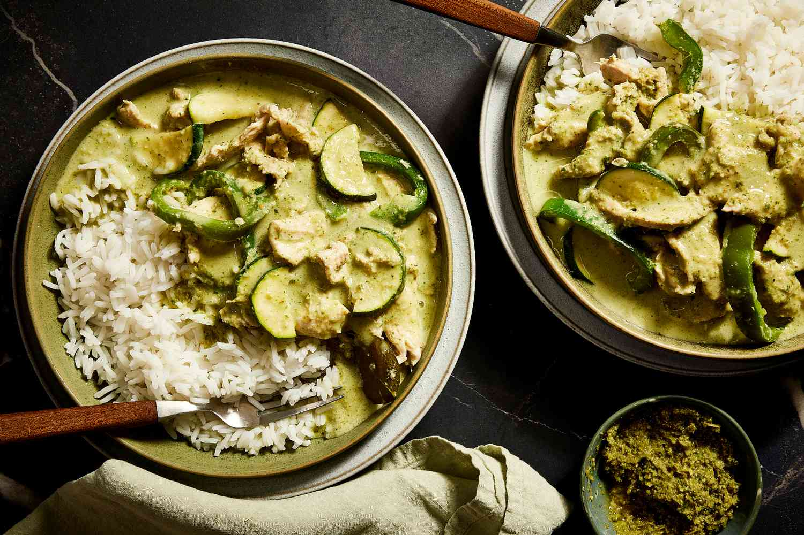
Зелений каріТайська страва, що готується з кокосового молока, зеленого карі пасти, чилі, лемонграсу, базиліка та різноманітного м'яса (курка, яловичина або свинина). Страва має гострий, ароматний смак і зазвичай подається з рисом, додаючи свіжість завдяки травам.
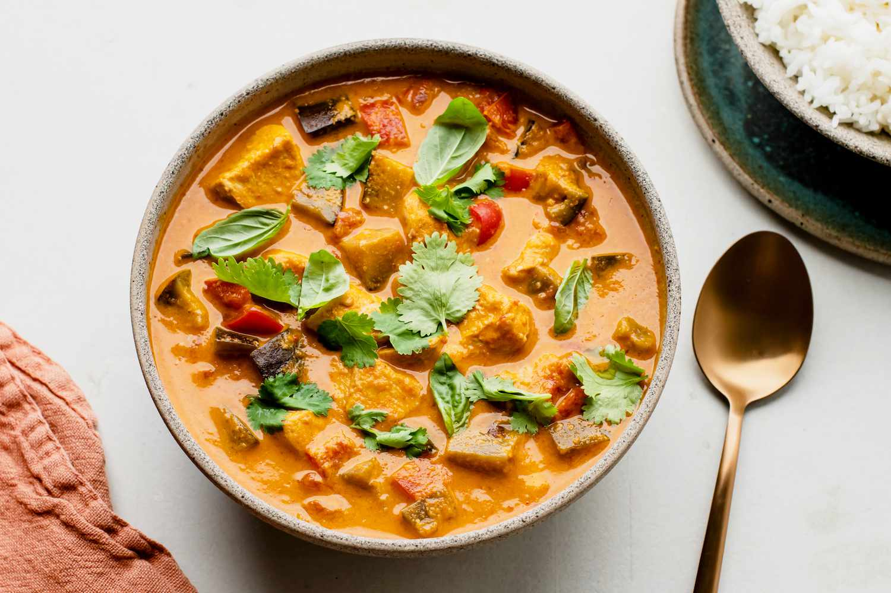
Тайський червоний каріНасичена тайська страва, приготована з м’яса, морепродуктів або тофу, тушкованих у пряному кокосовому молоці з червоною карі-пастою, лемонграсом, чилі, часником і травами. Подається з рисом і має яскравий гостро-пряний смак.
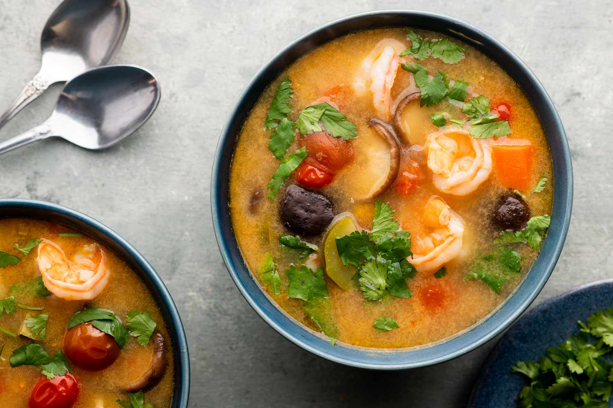
Том ямКласичний тайський суп з яскраво вираженим кисло-гострим смаком, приготований на бульйоні з лимонного листя, лемонграсу, чилі та галангала. Зазвичай він включає креветки, курку або гриби, а також часто подається з рисом для балансу смаків.
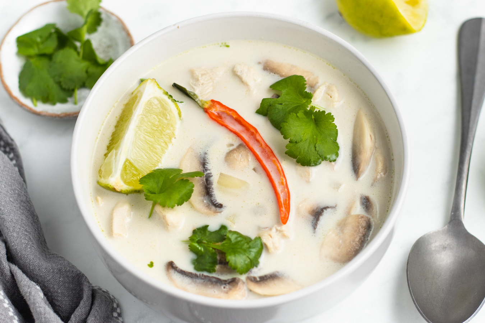
Том кха гайТайський суп з куркою, приготований на кокосовому молоці з лемонграсом, галангалом, лаймовими листями та чилі. Страва має ніжний, але ароматний смак, поєднуючи кисло-солодку нотку з пряними і трав'яними відтінками.
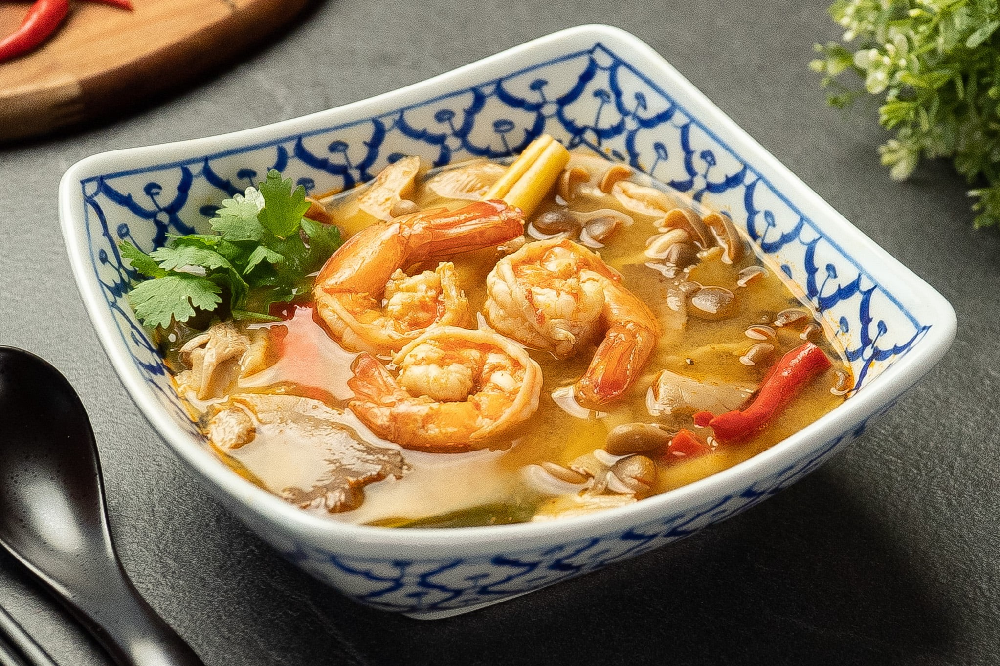
Том ям кунгКласичний тайський суп з креветками, який поєднує кисло-гострі смаки, завдяки лемонграсу, галангалу, чилі, лайму та рибному соусу. Бульйон на основі кокосового молока додає страві насиченості, роблячи її ароматною та освіжаючою.
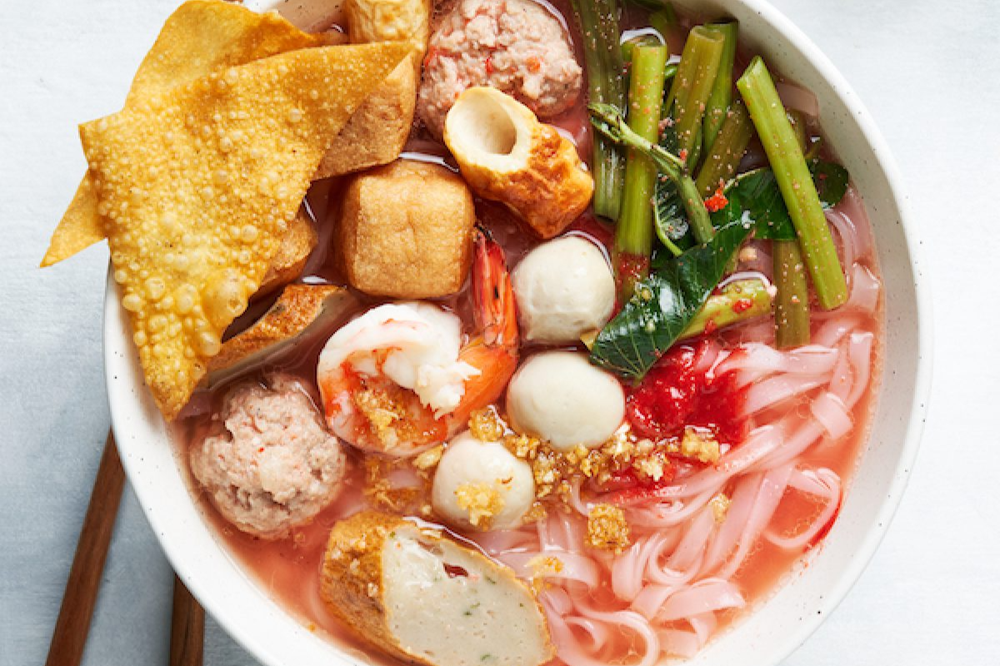
Єн та фоТайсько-в'єтнамська страва, що складається з тонкої рисової локшини, приготованої в ароматному рожевому бульйоні з м'ясом (зазвичай яловичиною або куркою), овочами та свіжими травами. Подається з чилі, лаймом та соусом для додаткового смаку.

ЛарбТайський салат, приготований з м’яса (зазвичай яловичини, свинини або курки), дрібно нарізаного і приготованого на грилі чи смаженого, змішаного з рисовим борошном, м’ятними листям, цибулею, чилі та лаймом. Страва має свіжий, кисло-гострий смак і часто подається з листям салату.

Салат із папаїПопулярна тайська страва, що складається з тертої зеленій папаї, змішаної з помідорами, зеленими бобами, морквою, чилі, часником та арахісом. Подається з кисло-солодким соусом на основі рибного соусу, лайму та цукру, створюючи освіжаючий і пікантний смак.
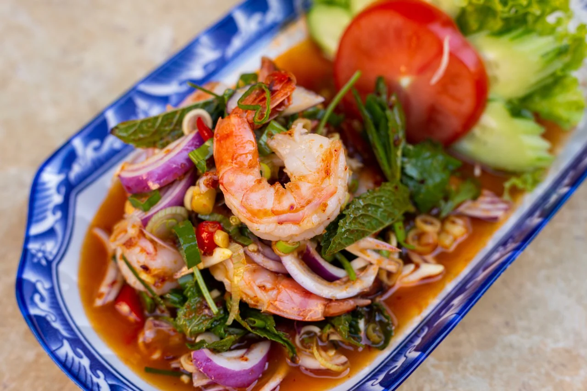
Пла кунгТайська страва, що складається з маринованих креветок, змішаних з гострим чилі, часником, лимонним соком, рибним соусом і травами, такими як м'ята та кінза. Салат має освіжаючий, кисло-гострий смак і часто подається з листям салату або рисом.
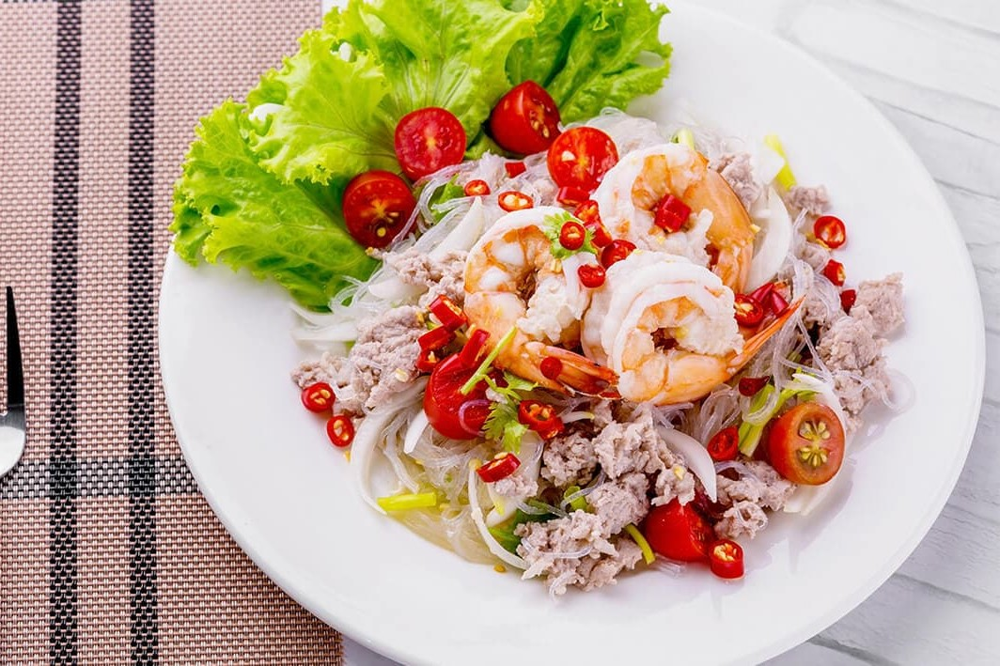
Ям вун сенТайський салат з тонкої рисової локшини (ву сен), змішаної з морепродуктами, куркою або свининою, а також овочами. Приправлений чилі, рибним соусом, лаймом і цукром, цей салат має кисло-гострий, солодкий смак та яскраву ароматику.
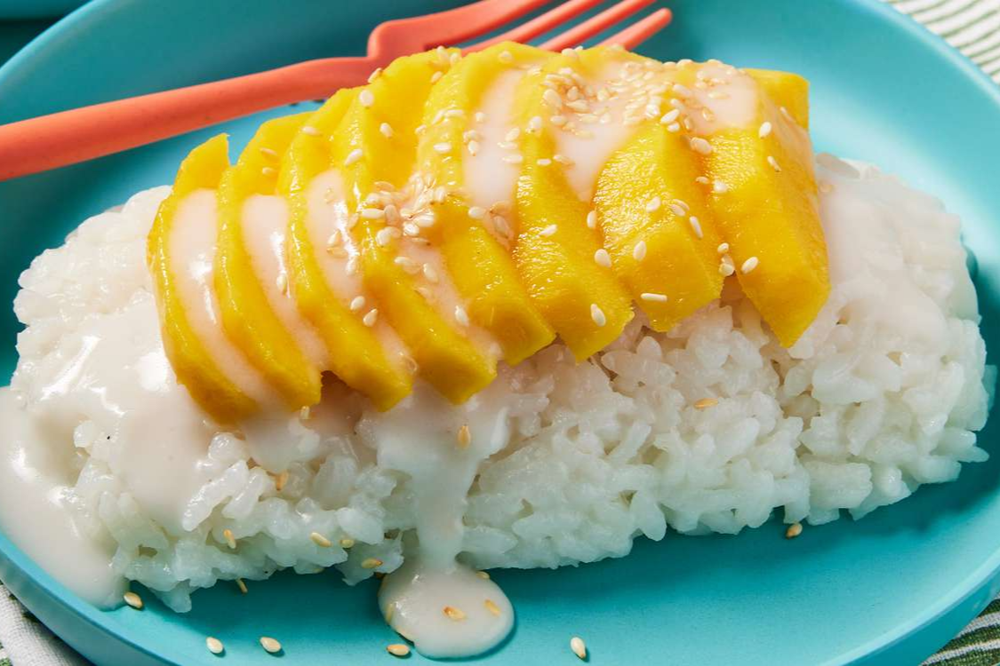
Липкий рис з мангоПопулярний тайський десерт, що складається з м’якого липкого рису, приготованого в кокосовому молоці, і свіжих шматочків солодкого манго. Подається як солодка, кремова страва з легким тропічним смаком.
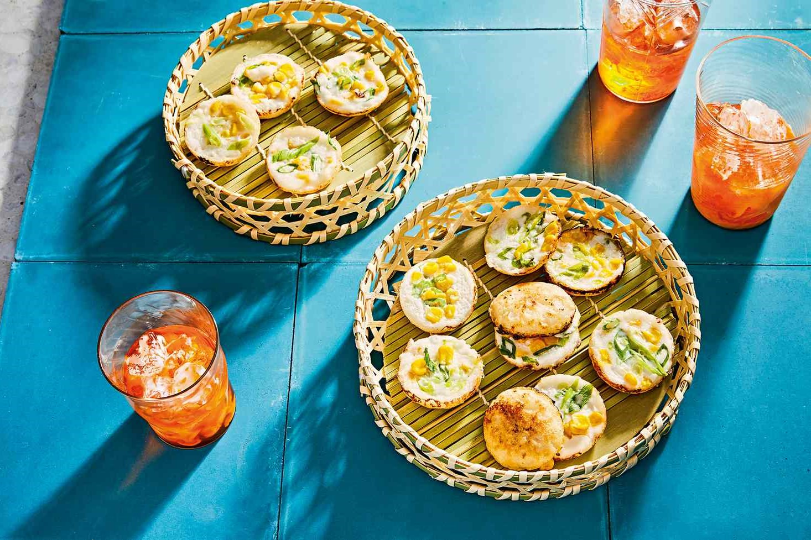
Тайські рисово-кокосові млинціТайський десерт, що складається з м’яких, тонких млинців, приготованих з рисового борошна та кокосового молока. Вони часто наповнюються солодким кокосовим кремом або сирим кокосом, що створює смачний та ароматний десерт.
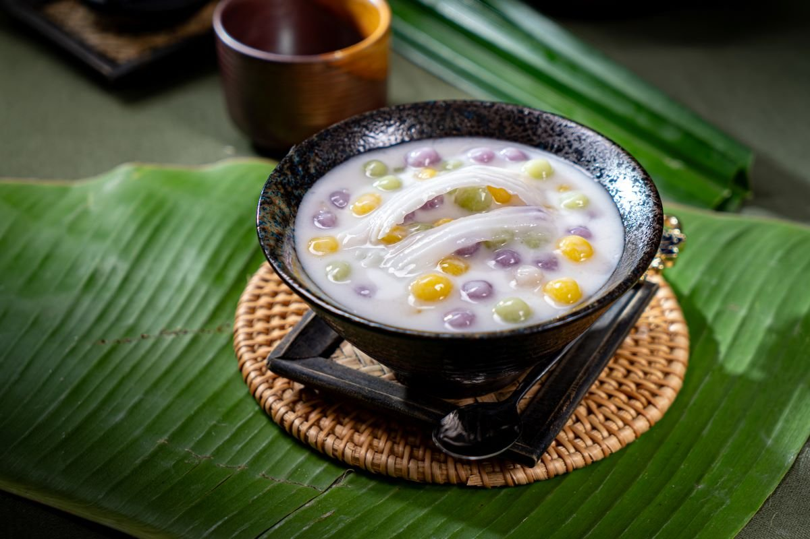
Буа лойТрадиційний тайський десерт, що складається з м’яких клейких рисових кульок, наповнених солодким смачним кремом, які подаються в гарячому кокосовому молоці. Страва має ніжний, солодкий смак з ароматом кокосу та легку текстуру.
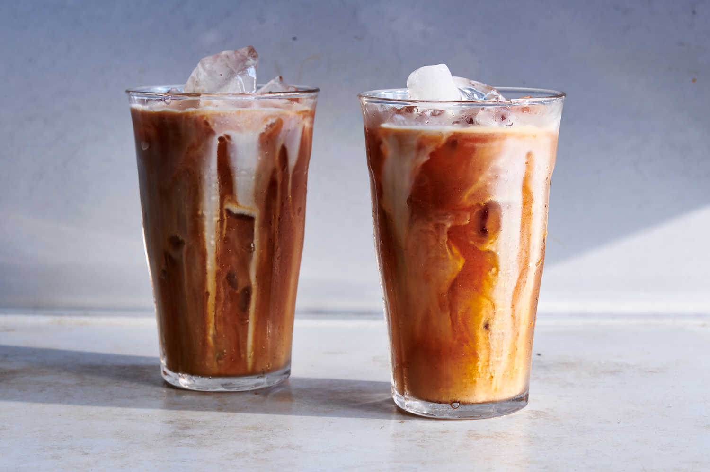
Ча йєнПопулярний тайський холодний чай, приготований з чорного чаю, підсолодженого цукром і змішаного з льодом та згущеним молоком. Напій має насичений солодкий смак і часто подається з льодом, що робить його освіжаючим у спекотні дні.